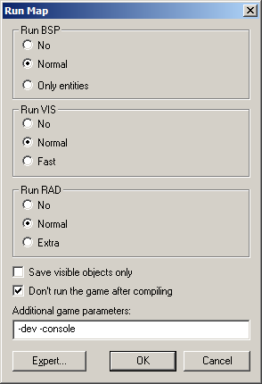

Dialogs: Run Map - Normal Mode
This command allows you to run the utilities that are necessary to compile the map into the .BSP format usable in the Source engine. The Run Map dialog will be in Normal or Expert mode, depending on which mode was last used.
Normal Compile
The Normal compile dialog gives you some very basic control over the compiling process, enough for simple testing of levels.

Run BSP, Run VIS, Run RAD
These settings allow you to define which tools will be run along with a couple of their most basic parameters.
Save visible objects only
If this option is checked, only objects that are not hidden will be compiled into the map.
Don't run the game
If this option is checked, the game will not be started after the map has finished compiling.
Additional Game Parameters
The text in the Additional Game Parameters text box will be appended to the game execution command, allowing you to feed special commands to the engine. If you are compiling a map for a mod, be sure to include the -game <modname> parameter. The parameters -dev and -console, also shown, are useful when testing maps. The BSP, VIS, and LIGHT processes are all dependent upon the Build Programs settings in the Options dialog box.
OK
Starts the map compile with the current settings.
Cancel
Exits the Run Map dialog with no changes.
Expert
This button switches the Run dialog to Expert Compile mode.
Related Topics
© 2004 Valve Corporation. All rights reserved. Valve, the Valve logo, Half-Life, the Half-Life logo, the Lambda logo, Steam, the Steam logo, Team Fortress, the Team Fortress logo, Opposing Force, Day of Defeat, the Day of Defeat logo, Counter-Strike, the Counter-Strike logo, Source, the Source logo, Hammer and Counter-Strike: Condition Zero are trademarks and/or registered trademarks of Valve Corporation. Microsoft and Visual Studio are trademarks and/or registered trademarks of Microsoft Corporation. All other trademarks are property of their respective owners.